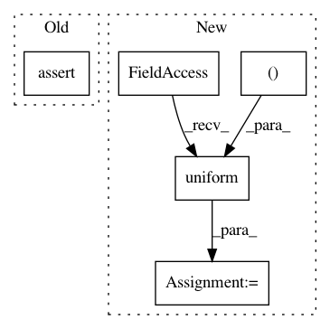

26138c45ee77d508abb928e8adc6a77aa2e9d149,tests/test_hypersphere_tensorflow.py,TestHypersphereOnTensorFlow,test_exp_vectorization,#TestHypersphereOnTensorFlow#,171
Before Change
n_tangent_vecs = self.space.projection_to_tangent_space(
n_vecs, base_point=n_base_points)
result = self.metric.exp(n_tangent_vecs, n_base_points)
gs.testing.assert_allclose(result.shape, (n_samples, dim))
expected = gs.zeros((n_samples, dim))
for i in range(n_samples):
expected[i] = self.metric.exp(n_tangent_vecs[i], n_base_points[i])
After Change
one_tangent_vec = self.space.projection_to_tangent_space(
one_vec, base_point=one_base_point)
result = self.metric.exp(one_tangent_vec, one_base_point)
point_numpy = np.random.uniform(size=(1, dim))
with self.test_session():
self.assertShapeEqual(point_numpy, result)
n_tangent_vecs = self.space.projection_to_tangent_space(
In pattern: SUPERPATTERN
Frequency: 7
Non-data size: 5
Instances
Project Name: geomstats/geomstats
Commit Name: 26138c45ee77d508abb928e8adc6a77aa2e9d149
Time: 2018-09-14
Author: ninamio78@gmail.com
File Name: tests/test_hypersphere_tensorflow.py
Class Name: TestHypersphereOnTensorFlow
Method Name: test_exp_vectorization
Project Name: geomstats/geomstats
Commit Name: 7289379edee53f213b108e5b5e9c62da5b79a0d6
Time: 2018-09-14
Author: ninamio78@gmail.com
File Name: tests/test_hypersphere_tensorflow.py
Class Name: TestHypersphereOnTensorFlow
Method Name: test_random_uniform
Project Name: geomstats/geomstats
Commit Name: d1d8284dd21afef5f5cc3e0b98f67a9dab4d57cd
Time: 2018-09-12
Author: ninamio78@gmail.com
File Name: tests/test_hypersphere_tensorflow.py
Class Name: TestHypersphereOnTensorFlow
Method Name: test_log_vectorization
Project Name: geomstats/geomstats
Commit Name: 26138c45ee77d508abb928e8adc6a77aa2e9d149
Time: 2018-09-14
Author: ninamio78@gmail.com
File Name: tests/test_hypersphere_tensorflow.py
Class Name: TestHypersphereOnTensorFlow
Method Name: test_log_vectorization
Project Name: geomstats/geomstats
Commit Name: d1d8284dd21afef5f5cc3e0b98f67a9dab4d57cd
Time: 2018-09-12
Author: ninamio78@gmail.com
File Name: tests/test_hypersphere_tensorflow.py
Class Name: TestHypersphereOnTensorFlow
Method Name: test_exp_vectorization
Project Name: senarvi/theanolm
Commit Name: 2c4323485191d3d1e524701f0322318a4418da6b
Time: 2016-10-02
Author: seppo.git@marjaniemi.com
File Name: theanolm/network/softmaxlayer.py
Class Name: SoftmaxLayer
Method Name: create_structure
Project Name: geomstats/geomstats
Commit Name: 2a2bb0592441167e5f85c0153bca25a5bedd0079
Time: 2018-09-12
Author: ninamio78@gmail.com
File Name: tests/test_hypersphere_tensorflow.py
Class Name: TestHypersphereOnTensorFlow
Method Name: test_random_uniform